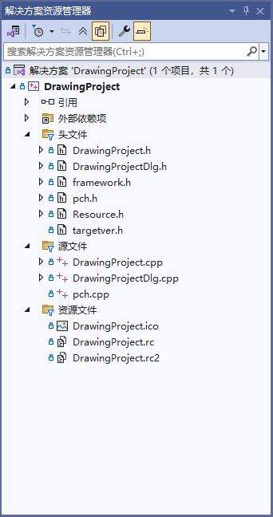
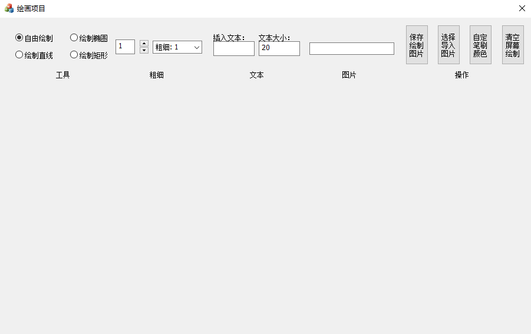
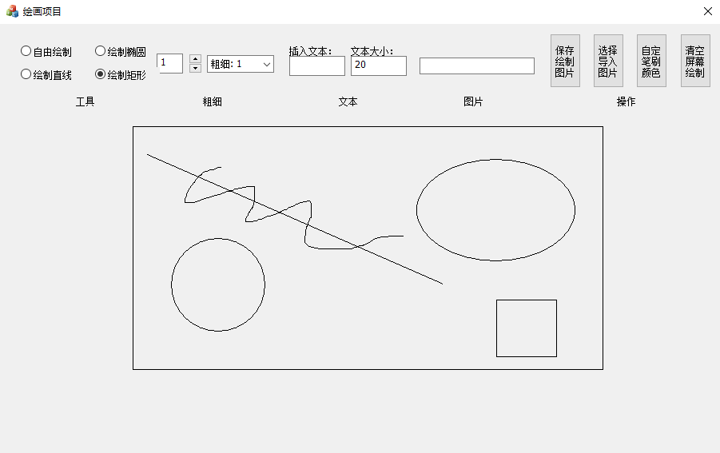
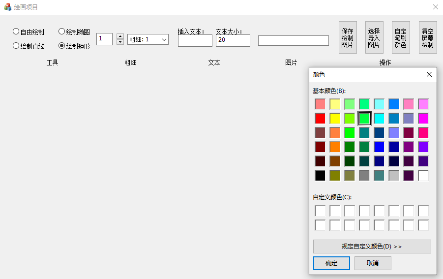
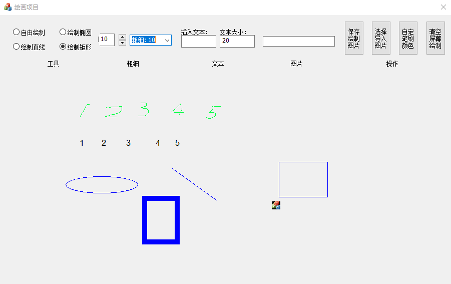
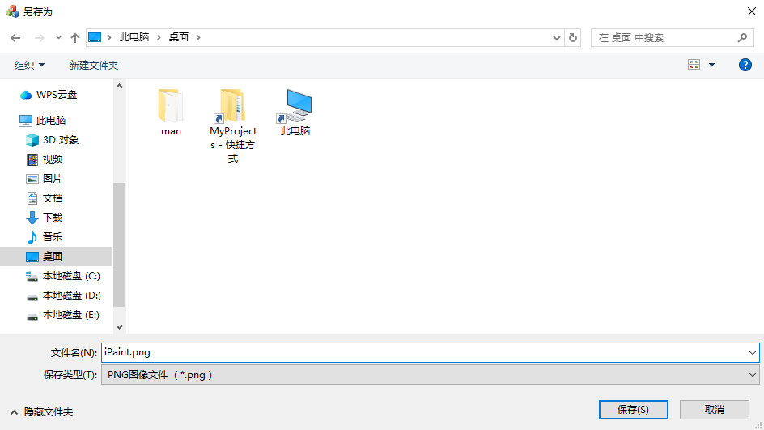
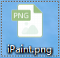

MFC绘图项目
你可以点击以下链接查看与下载相关资源：
项目源码可在GitHub仓库查看：项目地址（github）
简介
基于MFC的绘图项目，提供简单的绘制功能，为学习熟悉Visual Studio中提供的工具箱中组件，并未组件绑定事件熟悉运行原理。
项目提供了自由绘制、矩形绘制、椭圆绘制、直线绘制，以及设定线条粗细框输入修改、下拉框选择修改与旋转控件点击增减修改，插入文本与设定文本大小，插入图片操作，以及基本的保存绘制图片，导入图片，笔刷颜色设定与清空屏幕功能。
通过不断记录按下按键后每次移动上次位置，绘制当前点与上次点直线即可完成自由绘制，其他形状使用对应方法即可，清空屏幕直接删除所有绘制并触发重绘即可，通过网上完成编写的相关功能直接拷贝代码并修改部分内容完成保存图片以及自定义笔刷颜色窗口的功能，插入图片与文本只要框内有字符即进行对应操作并清空文本框，选择框则使用`CFileDialog`完成。
项目相关截图：
项目解决方案与结构

绘图项目界面

简单绘制一些图形

颜色选择弹窗

插入文字与图片及粗细绘制
 
选择保存文件并成功保存
技术栈与特点
开发语言与技术栈：
- C++ 100.0% —— 整个项目代码均采用C++编写，借助C++面向对象编程的特性，如类的定义、继承和多态，增强了代码的模块化和可扩展性。同时，使用了C++标准库中的部分功能，如字符串处理等，提升了开发效率。
- MFC：使用MFC框架开发Windows桌面应用程序，为熟悉MFC项目组件运行原理，使用Visual Studio中工具箱中组件，对不同组件绑定事件以完成需求功能。
- Windows API：项目中使用Windows API相关的功能，例如通过`CClientDC`、`CPaintDC`等设备上下文类进行图形和文本的绘制操作，利用`CColorDialog`实现颜色选择对话框等。
- 图形绘制：利用设备上下文DC进行图形与文本绘制，通过`CClientDC`在窗口内进行绘图操作。
- 消息映射机制：MFC的消息映射机制被用于处理各种用户交互事件，如鼠标点击、按键操作、控件状态改变等，通过`BEGIN_MESSAGE_MAP`和`END_MESSAGE_MAP`宏定义消息处理函数，实现对用户操作的响应。
项目特点：
- 这是一个学习MFC简单绘图功能的项目，该项目适合学习MFC框架与组件的基本使用
- 项目实现了基础绘图功能，用户可以选择不同的绘图类型，以及设置绘图颜色和粗细，还能插入文本和图片，增加了项目的实用性和趣味性，插入图片位置为左上原点即可实现读取历史文件的功能
- 通过使用MFC的控件和消息映射机制，实现了良好的用户交互体验，用户可以通过界面上的按钮、单选框、下拉框等控件方便地进行操作，并且能够实时看到绘图效果